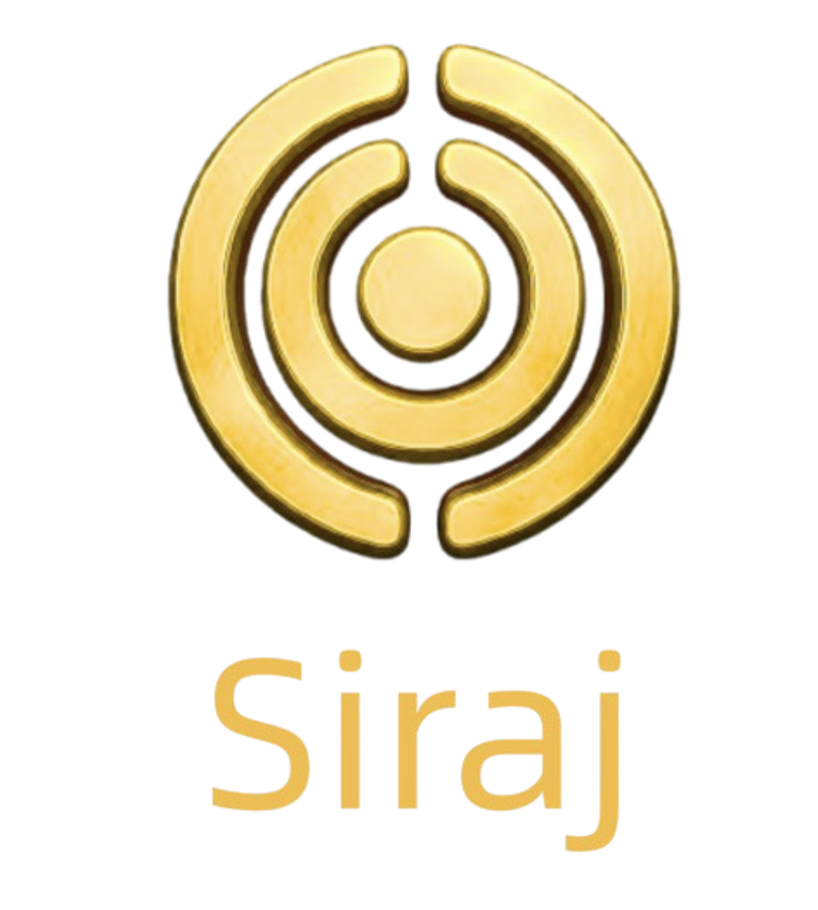
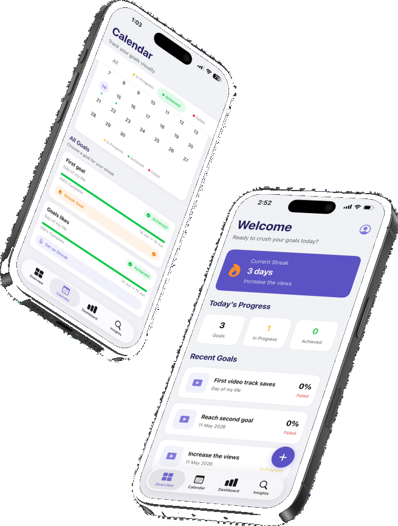
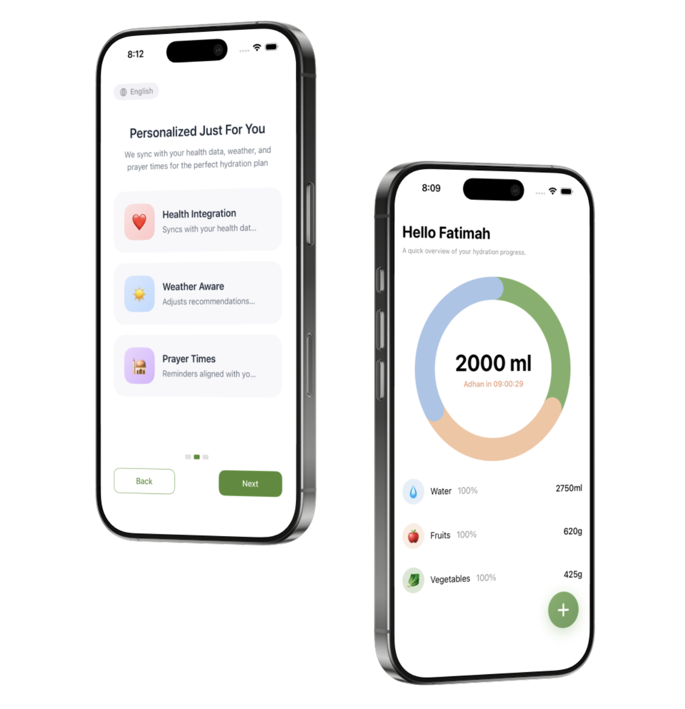
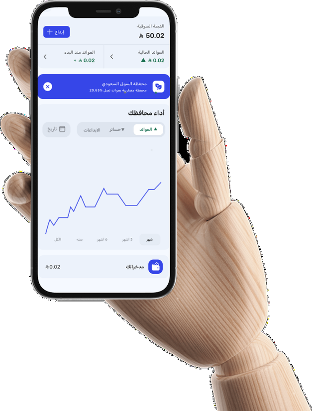

Apple Developer Academy
Project Management, Software Management & UX/UI Design — Present
VIEW PROJECTSProduct Discovery & User Research
Riyadh, Saudi Arabia
Hello! I Am Norah
Because understanding people is where great products begin.
Currently studying at Apple Developer Academy — Riyadh
Business Administration graduate with experience in user research, product discovery, and market analysis. Skilled in uncovering user needs, synthesizing research insights, and translating findings into product recommendations.
Through Apple Developer Academy projects, I've led qualitative interviews, conducted market analysis, and developed personas and journey maps that drive user-centered product decisions.
Project Management, Software Management & UX/UI Design — Present
VIEW PROJECTSHR Operations Specialist — July 2023 to July 2024
SAUDI ARABIAHR Coordinator — Tamheer Program, Sep 2022 to Mar 2023
SAUDI ARABIABachelor's in Business Administration — GPA 3.79/4, First Class Honor
2017 – 2021I'm passionate about joining cross-functional teams where research meets product.
Siraj addressed the challenge of helping rescue teams locate flood victims during emergencies. My role focused on secondary research, competitor analysis, business model development, and crafting the final presentation narrative using storytelling techniques. The project was awarded 1st Place in The Garage Challenge.


Many content creators struggle to understand why some videos succeed while others don't. GrowTube explored this challenge through customer discovery, market research, and competitor analysis to identify product opportunities that support creators' growth.
Many people struggle to maintain healthy hydration habits during Ramadan due to changes in their daily routines. Nasagh explored this challenge through user interviews, surveys, and market research to validate opportunities for a healthier hydration experience.


Users faced usability challenges that affected their overall experience within the Abyan app. The project explored user needs, business goals, and product context to uncover opportunities for a more intuitive and user-centered experience.